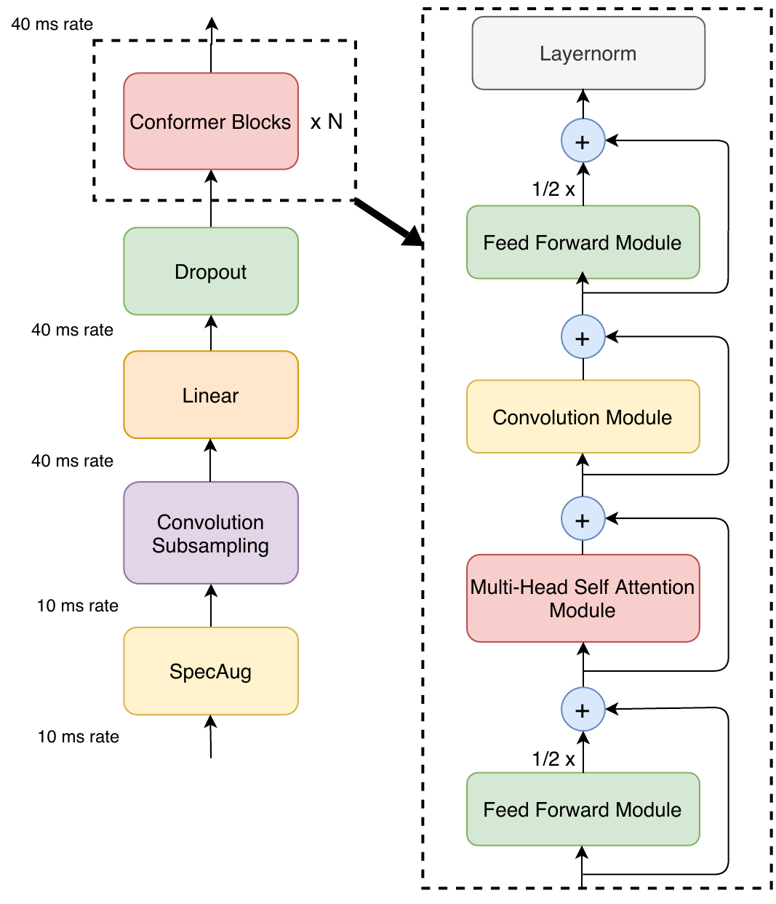
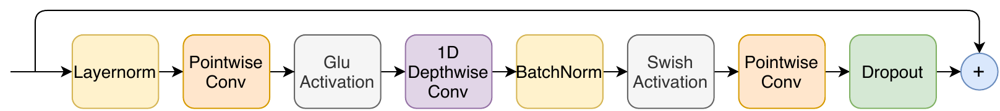

On this page
Here is the question: how do you build an ASR model that hears both the phoneme edge and the whole sentence? Vanilla transformers are great at global context but clumsy with local detail like phoneme edges and formants. CNNs nail local structure but miss global dependencies. The Conformer, a "convolution-augmented transformer," takes both. And unlike most hybrids, this one actually worked.
Text models get neat little tokens. Speech does not work like that: you get a continuous waveform, typically sampled at 16 kHz. So the first job is turning that wave into features, usually 80-dim filterbank frames, about 100 frames per second of speech. One second of audio becomes a 100 × 80 matrix. Then a linear or convolutional layer projects those features up to the model dimension dmodel, the same job an embedding layer does for text. With the model dimension set to 256, the input is 100 × 256, and each row is one frame's "token".
Before the blocks, most systems shrink time itself.
Input: 40 frames
Output: 20 frames
2 quarters the T-squared attention cost, stride 4 cuts it 16x, but each surviving frame gets wider, and a 30 ms phoneme can die inside a single frame.1, 2, 4): try switching from 2 to 4 and watch the output strip halve from 20 frames to 10 while the cost readout drops from 4x cheaper to 16x cheaper and the frame shift doubles to 40 ms.4 only 10 frames land in the output strip.Attention costs T squared, and T is 100 frames a second. Merging neighbors before the first block is the cheapest speedup in ASR: stride 2 quarters the attention bill. The price is resolution, and you pay it in phonemes.
The structural difference at a glance. The transformer block runs attention then one full feed-forward, each with a residual skip. Conformer splits the feed-forward into two half-strength halves (each at half strength, so the pair equals one full FFN), sandwiches self-attention and the new convolution module between them, and gives every module its own residual skip as Figure 1 shows. The colors match across the two blocks; the bold borders mark what changed.
The Conformer block calls these two feed-forward networks a macaron-style feed-forward network, so named because the main attention and convolution modules are sandwiched between two FFNs, like the filling in a macaron. They add capacity and non-linearity but don’t mix information across time steps. They scale the FFN by half to match the contribution of one FFN in a vanilla transformer.


Scroll sideways to read the stage labels.
Rebuilt from Figure 2 of Gulati et al. (Interspeech 2020). arXiv:2005.08100
Figure 2 of the paper, for the curious: "Convolution module. The convolution module contains a pointwise convolution with an expansion factor of 2 projecting the number of channels with a GLU activation layer, followed by a 1-D Depthwise convolution. The 1-D depthwise conv is followed by a Batchnorm and then a swish activation layer."
Rebuilt from Figure 1 of Gulati et al. (Interspeech 2020). arXiv:2005.08100
Figure 1, verbatim caption: "Conformer encoder model architecture. Conformer comprises of two macaron-like feed-forward layers with half-step residual connections sandwiching the multi-headed self-attention and convolution modules. This is followed by a post layernorm."
The large model without a language model (2.1 / 4.3) is dimmed because the page already reports it above. The new numbers here are the with-LM rows and the small model.
2.7 and 6.3 to 2.1 and 5.0.All six shrunk: the language model buys a cleaner transcript on every test set.
These are the actual models from the paper, with the actual numbers. The tour pulls the conv module out of each model one at a time; or flip the checkbox to yank it from all three at once and watch the orange slices leave together. Either way the conv module's params come out, while the reported WER stays put.
The orange slice is the conv module's params: the tour pulls it out of each bar in turn, one model at a time.
Param math, approximate: totals are the paper's reported params. Conv cost per block is about three times the model dimension squared (the two pointwise projections: one to expand to twice the model dimension before the GLU gate, then one to project back to the model dimension; biases, LayerNorm, and the depthwise conv's own params are ignored), times the block count from the paper's table.
(The cards show kernel 32, the paper's S/M/L config value; the PyTorch code further down uses kernel_size=15 as a round working number. The kernel size does not enter this estimate anyway, since the depthwise conv's own params are ignored too.) The WER numbers are the paper's reported results with the conv module in place. The toggle only subtracts its param cost; it does not predict what WER would be without it. That is the point: isolate what local detail costs, and compare it to what it buys.
3M of Conformer (M)'s 30.7M parameters, roughly 10 percent, while that model beats a 139M transformer. Local detail, bought cheap.Conformer (M) is 30.7M params and scores 5.0 on test-other, beating a 139M transformer at 5.6. The conv module costs only about 3.1M of those 30.7M. Local detail, bought cheap. That is the whole trick.
The first FFN applies a 2-layer MLP to each frame independently. The dimension might be expanded to the feed-forward width (e.g., 1024). The usual transformer choice is a 4x expansion, so with a model dimension of 256 that gives you exactly 1024, which is what the code below uses. The demo up top does its own rough conv-only count (about three times the model dimension squared per block); it never touches this FFN math. It is then scaled back so a half-scaled residual connection can be added to the input.
So far, the input is a batch of frames, each frame a vector at the model dimension; this is the output from the first FFN and its residual connection. Now, you project these frame vectors into queries, keys, and values, one set per head. Each head gets its own learned projection, sized for the head count: with a model dimension of 256 and 4 heads, each head gets a 64-dim projection, so every head gets its own 64-dim room to work in.
You then compute attention: score every frame against every other frame, divide by the square root of the head dimension so the scores stay in a range softmax can handle, and take a weighted mix of the values. Concatenate the heads, project back with the output projection, and add the residual.
This is almost the same as a vanilla transformer, but instead of sinusoidal encodings, it uses relative positions, which generalize better to long sequences and relative timing. With absolute positional encodings, for each input position, you would add the positional encoding directly to each input. The model is given the known positions, and the query and key themselves get shifted by this absolute index.
With relative positional encoding, we don’t alter the input embeddings directly. Instead, we introduce an extra bias term in the attention score based on the relative distance. The model learns biases based on the relative distances between tokens. Speech is shift-invariant: a phoneme like "ba" at 1 second and 10 seconds should be treated the same. What matters is how far apart the tokens are, not their absolute index.
The relative offset is a learned embedding for how far apart two frames are. In words: the usual query-key match, plus a learned bonus for how far apart the two frames are. Two frames 5 apart get the same bonus no matter where they sit in the utterance. We define a maximum relative distance, and this offset can be anywhere within that range in either direction, where each row corresponds to one head-sized vector.
For a given pair, we look up the relative embedding and perform a dot product with the query, which gets added to the attention scores. The embedding table holds one vector per possible relative offset. You can share this table across all heads.
2 shift leaves the bars frozen and the note reads biggest change 0.000; flip to absolute mode and the same shift visibly redistributes the bars.0 to 11): try parking the query on a different frame, or clicking a frame in the strip above the bars, and watch the blue and orange segments re-split by sound-alike and distance.2 frames: try flipping to Absolute yourself, then shifting: same sounds, different answer, just because the clock moved. In relative mode the canvas flashes an annotation confirming the attention did not change while the bars stay frozen and the note reads biggest change 0.000. That frozen flash is the lesson.The score is two questions added together: "do we sound alike" plus "how far apart are we". Relative positions make the second question about distance, so a "ba" is a "ba" at second 1 or second 10. Absolute positions make it about the clock, so shifting the utterance changes the answer.
Next is the convolution module, which is the big difference from vanilla transformers. This is a depthwise separable convolution used to explicitly model local sequential structure.
The input here is the sequence after attention did its thing: every frame already carries long-range context from the whole utterance. The shape is still a batch of frames at the model dimension. The convolution module now layers local patterns on top: short-term temporal structure that attention is too coarse to catch.
The convolution module looks similar to those in EfficientNet and MobileNet.
15-tap kernel, which is 150 ms at 100 frames per second. That is why the code below uses kernel_size=15. This gives each feature map a local receptive field over time. At this point, the representation is channel-local and time-dependent.bars sum to 1.0 at every probe position
7 frames wherever you put it, while attention redistributes by content across the whole utterance, like gossip. Same probe, two readings: the conv sees the edge and its neighbors, attention remembers the similar edge it heard frames earlier.0 to 23): try parking the probe on a burst edge at frame 12 and watch the window box the edge while the bars spike on the matching segments too; the note under the left panel names the exact window frames and weights.The convolution reads like a magnifying glass: seven frames, seventy milliseconds, wherever you put it. Attention reads like gossip: it asks every frame in the utterance what it has to do with this one. The conv sees the edge and its neighbors; attention sees the edge and remembers the last time it heard one. That is why the block has both.
Let’s think: would you use LayerNorm or BatchNorm after this? LayerNorm would normalize per frame across all channels, so it could actually wash away the learned temporal filters. If you use BatchNorm, it normalizes per channel but across time and the batch. This way, each channel keeps its identity and normalization is consistent across time, which helps stabilize the convolution filters.
So, BatchNorm makes more sense here, although it has challenges with running inference. BN would output zero-mean and unit-variance activations, so an activation function would help. Swish would let small negative values pass through, which can be crucial in audio processing.
BatchNorm has two personalities, and the difference between them is what makes streaming tricky. During training it normalizes each channel with the mean and variance of the batch and time dimensions you are holding, plus a learnable scale and shift per channel. Meanwhile it quietly keeps a running estimate of that mean and variance. Those running numbers do nothing during the training forward pass; they are just being stockpiled for later. At inference the roles flip: you ignore the test batch's own stats entirely and normalize with the stockpiled running stats, same scale and shift.
In words: subtract the running mean, divide by the running spread, then let the learned scale and shift re-scale and re-shift each channel. The running stats are frozen from training; the test batch never gets a vote.
And here is the streaming catch: those frozen stats were measured over the whole training set. A live chunk might have a very different true local mean, but it still gets centered by the global one. That mismatch is the price of not waiting for the future.
Now here is why streaming ASR breaks that scheme. Training measured those running stats over long sequences and full batches. In streaming you are normalizing a live local chunk with global averages that do not match it. And you cannot wait for future frames to recompute stats either, so you need a causal or online version of BatchNorm.
The usual fixes: compute the mean and variance over past and current frames only, updating incrementally as new frames arrive, or use a sliding window over the recent frames. Early in the utterance those statistics are unreliable, so they typically kick in once the state settles. Or you give up on BatchNorm for streaming and use something real-time friendly like LayerNorm.
Anyway, the Conformer then applies a BatchNorm and a Swish activation. Finally, another pointwise convolution with dropout is applied, which maps the model dimension back to itself. Lastly, a residual connection is added from the start of the module to its output. Looks redundant, but it is not: the depthwise conv is a per-channel local filter, so it never mixes channels. The pointwise conv after it is where channels finally talk to each other, exactly the cross-channel interaction the depthwise step cannot give you.
This is our convolution block. The output from the convolution block keeps the same shape as the input. After this, another feed-forward network, similar to the one before, is applied to each frame with a residual connection to complete the macaron-style design.
It expands the model dimension to the feed-forward width, applies a non-linearity, projects back to the model dimension with dropout, and adds a half-scaled version of that as a residual. The shape stays a batch of frames at the model dimension, and that is the whole point: same shape in, same shape out, so you can stack as many blocks as your budget allows.
The first FFN before the attention module enriches the frame-level features before they interact globally. The second FFN enriches the representation after it has been mixed both globally and locally. That symmetry is why the block trains more stably than the same pieces stacked in a different order.
Let's build the block piece by piece. First, the macaron FFN. This is just a normal two-layer MLP, but notice the residual is scaled by 0.5. That is the whole macaron trick: two of these add up to one full FFN.
import torch
import torch.nn as nn
import torch.nn.functional as F
class ConformerFFN(nn.Module):
def __init__(self, d_model, d_ff, dropout=0.1):
super().__init__()
self.linear1 = nn.Linear(d_model, d_ff)
self.linear2 = nn.Linear(d_ff, d_model)
self.dropout = nn.Dropout(dropout)
self.activation = nn.SiLU() # Swish
def forward(self, x):
out = self.linear1(x)
out = self.activation(out)
out = self.dropout(out)
out = self.linear2(out)
out = self.dropout(out)
return x + 0.5 * out # Macaron: scale by 0.5
Next, self-attention. I am showing the vanilla version here to keep it readable. The relative positional bias we talked about above slots right into the score computation.
class MHSA(nn.Module):
def __init__(self, d_model, num_heads, dropout=0.1):
super().__init__()
assert d_model % num_heads == 0
self.h = num_heads
self.d_k = d_model // num_heads
self.W_q = nn.Linear(d_model, d_model)
self.W_k = nn.Linear(d_model, d_model)
self.W_v = nn.Linear(d_model, d_model)
self.W_o = nn.Linear(d_model, d_model)
self.dropout = nn.Dropout(dropout)
def forward(self, x, mask=None):
B, T, D = x.shape
Q = self.W_q(x).view(B, T, self.h, self.d_k).transpose(1, 2)
K = self.W_k(x).view(B, T, self.h, self.d_k).transpose(1, 2)
V = self.W_v(x).view(B, T, self.h, self.d_k).transpose(1, 2)
scores = torch.matmul(Q, K.transpose(-2, -1)) / (self.d_k ** 0.5)
if mask is not None:
scores = scores.masked_fill(mask == 0, float("-inf"))
attn = F.softmax(scores, dim=-1)
out = torch.matmul(attn, V)
out = out.transpose(1, 2).contiguous().view(B, T, D)
return x + self.dropout(self.W_o(out)) # residual
Now the convolution module, the part that makes a Conformer a Conformer. Pointwise conv plus GLU, a depthwise conv over time, BatchNorm plus Swish, then pointwise back. Watch the transpose dance: Conv1d wants channels first.
class ConformerConvModule(nn.Module):
def __init__(self, d_model, kernel_size=15, dropout=0.1, causal=False):
super().__init__()
self.layer_norm = nn.LayerNorm(d_model)
self.pointwise_conv1 = nn.Conv1d(d_model, 2*d_model, kernel_size=1)
padding = (kernel_size - 1) if causal else (kernel_size - 1) // 2
self.depthwise_conv = nn.Conv1d(
d_model, d_model, kernel_size,
groups=d_model, padding=padding
)
self.causal = causal
self.batch_norm = nn.BatchNorm1d(d_model)
self.pointwise_conv2 = nn.Conv1d(d_model, d_model, kernel_size=1)
self.dropout = nn.Dropout(dropout)
def forward(self, x):
residual = x
x = self.layer_norm(x)
x = x.transpose(1, 2) # (B, d_model, T)
x = self.pointwise_conv1(x)
A, B = x.chunk(2, dim=1)
x = A * torch.sigmoid(B) # GLU
x = self.depthwise_conv(x)
if self.causal:
x = x[:, :, :residual.size(1)] # trim if causal
x = self.batch_norm(x)
x = F.silu(x)
x = self.pointwise_conv2(x)
x = x.transpose(1, 2) # back to (B, T, d_model)
return residual + self.dropout(x) # residual
And finally, the whole block. FFN, attention, conv, FFN, with a LayerNorm at the end, which is what most implementations do.
class ConformerBlock(nn.Module):
def __init__(self, d_model=256, d_ff=1024, num_heads=4, kernel_size=15, dropout=0.1, causal=False):
super().__init__()
self.ffn1 = ConformerFFN(d_model, d_ff, dropout)
self.mhsa = MHSA(d_model, num_heads, dropout)
self.conv = ConformerConvModule(d_model, kernel_size, dropout, causal)
self.ffn2 = ConformerFFN(d_model, d_ff, dropout)
self.final_ln = nn.LayerNorm(d_model) # often added at block end
def forward(self, x, mask=None):
x = self.ffn1(x)
x = self.mhsa(x, mask)
x = self.conv(x)
x = self.ffn2(x)
return self.final_ln(x)
So does the sandwich actually beat a plain transformer? Here are numbers reported in the original Conformer paper (Gulati et al., 2020) on LibriSpeech, without an external language model. WER is word error rate, lower is better:
| Model | test-clean | test-other |
|---|---|---|
| Transformer (transducer) | 2.4 | 5.6 |
| ContextNet (L) | 2.1 | 4.6 |
| Conformer (M) | 2.3 | 5.0 |
| Conformer (L) | 2.1 | 4.3 |
Look at the medium Conformer: at 30.7M params it already beats the 139M-param transformer transducer. Local plus global beats global alone. That is the payoff of the sandwich.
So how do you make the Conformer run in real time? First, attention has to become streaming attention: restrict how far back each query can look with a fixed window plus a causal mask, so no frame ever waits on the future. The catch: speech is ambiguous without a little right context, so you let each frame peek a fixed number of frames ahead. That peek is paid for in latency, and the mask is exactly where you configure it.
Second, you can split the heads into multiple scales. A phoneme is about 50 ms, a word is about 500: give one head a short leash and another the whole pasture, and the same layer catches both.
i may look at frame j
audio cursor
emitted
Rows are query frames i (top to bottom), columns are key frames j (left to right).
L. A token is emitted only after its look-ahead frames arrive, so the emitted cursor trails the audio cursor by exactly L frames, and each look-ahead frame is 10 ms of latency.L frames, and the stats line names the latency in milliseconds. Or press Step to advance one frame at a time and see exactly when each token becomes emittable.1, 2, 3, 4, 6, 12): try a bigger chunk and watch each frame's visible region in the grid grow, at the cost of waiting for the whole chunk to arrive.0 to 4): set it to 0 and both cursors move together while the grid collapses to block-causal; drop the chunk to 1 as well and it becomes a true causal triangle; try 4 and watch the gap stretch to 40 ms.Offline attention is a luxury. In streaming you do not get the future for free, you rent it by the frame, and the rent is latency. Chunk 4, look-ahead 2: every frame sees its block plus two frames into the future, and those two frames cost 20 milliseconds. Make the look-ahead zero and the grid collapses to block-causal: each frame sees its own chunk and nothing after it. Drop the chunk to 1 and you get the true causal triangle: perfectly real-time, flying blind into the future.
6, 12, 24, then the whole staircase glides as the query walks forward with full coverage intact.0 to 23): try moving the query and watch all four windows slide with it while the union count stays put: the windows are anchored to the query, not to fixed positions.1 to 24): try stretching head 4 up to 24 yourself and watch the union strip fill the far past; the stats line counts exactly how many frames are covered.Why should every head look the same distance? A phoneme is 50 ms, a word is 500. Give head one a short leash and head four the whole pasture. The model gets phoneme edges and word context in the same layer, for free.
The convolution module uses "same" padding, which will need to change to causal padding, and the normalization, as we discussed in depth, needs to change as well.
Stack a few of these blocks and you get rich acoustic embeddings, one per frame. Last step: turn frames into words.
One linear layer maps each frame from the model dimension to the vocabulary size. That gives you a score for every vocab item at every frame. Softmax over the vocab axis turns those raw scores (logits) into probabilities: exponentiate each frame's scores and divide by the total, so every frame's vocabulary probabilities sum to one. Once you have this, you need to use a CTC loss to align the output probabilities with the text.